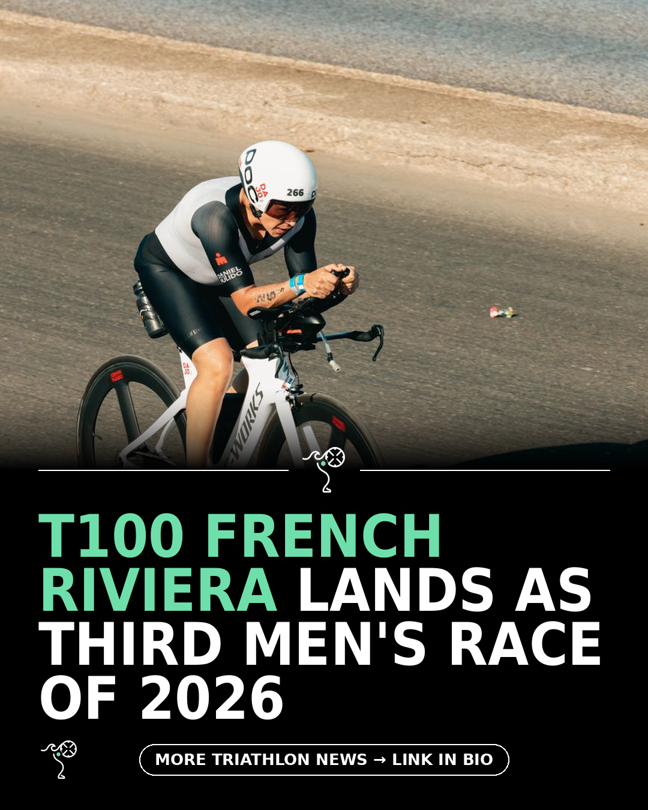

Triathlon News Daily
Monday, 24 August 2026 · generated automatically

Today's stories
- T100 French Riviera: how to watch the men's pro race220 Triathlon
- Garmin Cirqa reviewed after a month on the wristDC Rainmaker
- Budget vs premium tri-suit: does paying more make you faster?220 Triathlon
- 12 running hats and visors tested for every season220 Triathlon
- Vision's Metron TFE Evo brings semi-custom extensions to more riders220 Triathlon
- Why is Oxia a Good Supplement to Take?Blog - A Triathlete's Diary